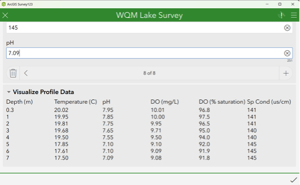
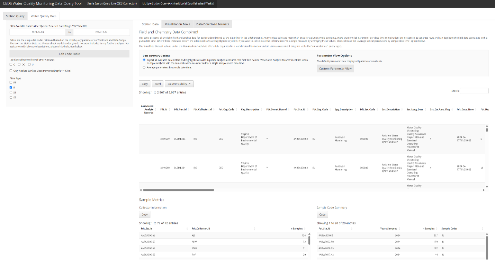

About DEQ
The Virginia Department of Environmental Quality (DEQ) is responsible for administering laws and regulations associated with air quality, water quality and supply, renewable energy, and land protection in the Commonwealth of Virginia. These responsibilities generate tremendous quantities of data from monitoring environmental quality, managing permitting processes across environmental media, responding to pollution events, and more. The data collected by DEQ requires management and analysis to gain insight, inform decision making, and meet legal and public obligations.
An Emphasis on Analytics
Analytics Community
Throughout the last 10 years, DEQ staff have worked to develop an analytics community to advocate for access to preferred tools, create content governance, facilitate training, share best practices, and collaborate across analytics platforms. DEQ staff have created technology-specific teams to help bridge the gap between the agency’s IT group, the Office of Information Services (OIS), and analytical tool users. Building these connections between OIS and staff shortens enterprise tool incident response times, ensures buy-in when decisions are made that impact users, amplifies program-specific technology/analytical needs, and promotes collaboration among colleagues. Formalizing content management and software maintenance processes through these teams helps address security concerns and promote trust between management, OIS, and end users. This, in turn, has created a greater emphasis on analytics at DEQ, which contributes to a willingness to invest in resources to support our enterprise analytical tools.
The analytics environments that OIS manages include Posit, Esri’s ArcGIS, and Tableau. Here, we will focus on the integration of our Posit and ArcGIS environments to modernize data collection methods for water quality monitoring. We’ll begin with a review of these environments and how they have structurally changed as a function of this emphasis on analytics. Then, we’ll present work describing how these environments were leveraged to modernize mobile data collection at DEQ.
Posit
DEQ staff have been using R since the early 2000’s, gradually growing the userbase with new hires and internal training. The increasing need for shared content and an internal hosting environment culminated with a single instance of Posit Connect being released in 2019. However, this environment relied on program staff for administration. With the growth in desktop R usage and Posit Connect content, program staff created a team of R users to create governance and processes to support the long-term maintenance of the server and hosted content. As R content grew, OIS recognized the need for dedicated support for the Posit Connect environment.
In 2024, OIS filled a new position dedicated to analytics administration and began work on upgrading the Posit environment. This upgrade involved moving to Red Hat Enterprise Linux 9, upgrading enterprise versions of R, expanding the environment to include a Test and Production instance of Posit Connect, and investing in Posit Package Manager. Today, DEQ’s R users leverage desktop RStudio to support data management and analysis workflows. DEQ uses Posit Package Manager to ensure that staff are working off of the same date-versioned CRAN snapshot, which simplifies collaboration. GitLab is used for version control. Shiny applications, markdown and quarto documents, as well as pinned datasets are developed in RStudio locally, and deployed to Posit Connect Test, and then our Production instance after the completion of relevant requirements.
Esri
As of Winter 2023, DEQ implemented a fully federated ArcGIS Enterprise deployment, which encompasses both Test and Production environments. This deployment includes ArcGIS Server, Portal for ArcGIS, ArcGIS Data Store, ArcGIS Survey123, and ArcGIS Web Adaptor. The environments are hosted across two virtual machines with corresponding Enterprise Geodatabases serving as the primary repository for nearly all agency GIS data.
Data from these central GIS enterprise databases are routinely transferred to various File Geodatabases or processed through nightly Python ETL (Extract, Transform, Load) scripts. These scripts facilitate public access to GIS data and enable updates to DEQ’s Comprehensive Environmental Data System (CEDS), which includes both a front-end user interface and an underlying database.
Modernizing Mobile Data Collection at DEQ
History of Mobile Data Collection
The primary method of data collection at DEQ relies on printing a waterproof data sheet generated from CEDS and filling it out with a black ink pen. When in the field, the data is read from the screen of a multiparameter sonde system and handwritten onto the field sheet. As an example, DEQ’s lake protocols include producing a profile of water quality parameters at every meter, from the surface to the bottom of an impoundment. After returning to a workstation, a data collector types this data from a field sheet into the CEDS front end, which then moves the data into the CEDS database. This method requires a keen eye and clear focus to avoid making transpositional errors. Even with excellent data input skills, these standard operations take a significant amount of time to execute. This created an opportunity to try a new digital data collection method with the goal of improving not only the quality of data, but the speed at which it can be securely collected and stored.
The Solution
ArcGIS Survey123
To implement a mobile data collection solution, DEQ modified its ArcGIS Enterprise infrastructure to include a Survey123 website hosted on internal servers. Additionally, DEQ established a new branch-versioned database connection, enabling publication services from DEQ’s Enterprise Geodatabase for use in ArcGIS Survey123 Connect to build monitoring surveys.
The mobile data collection process begins with the preparation of ArcGIS Survey123 Connect forms in XLSX format, which are populated with the upcoming year’s monitoring plan. This plan, which is now generated in R, consolidates all monitoring sites into discrete monitoring runs, scheduled at regular intervals to meet program objectives. The monitoring team uses R to query DEQ’s internal database (CEDS) for this information, identifying specific monitoring runs (e.g. lake vs. biological monitoring), to populate surveys with accurate information. Geospatial data from DEQ’s internal GIS portal is then accessed via the R-ArcGIS Bridge (specifically the arcgisutils and arcgislayers packages), then joined to the CEDS data in R to provide additional station information. Once finalized, the monitoring team publishes the surveys to the internal GIS portal through ArcGIS Survey123 Connect and distributes them annually to field teams.
Data Collection
Monitoring teams collect field data using these customized surveys on field-ready devices. They often use the software’s offline capabilities, storing data locally until they have service to send completed surveys to the internal ArcGIS portal. The surveys include quality assurance (QA) checks that enforce numeric thresholds and minimum data requirements, ensuring accuracy and compliance with database rules. For lake surveys, where sample profiles of multiple parameters are collected at depth, teams can visualize the data in real-time to confirm accuracy. Once data is entered and equipment passes calibration post checks, the teams submit the data to the ArcGIS portal and prepare samples for shipment to a lab for further analysis.

Caption: Example Lake Survey with real time data table thanks to Angie Reed. (link to her R Consortium blog post)
Extract, Transform, and Load
Each evening, after all monitoring activities are published to the internal ArcGIS portal, a custom Python script processes the newly collected data using the ArcPy library. The script retrieves only the samples entered that day, joining them with critical metadata from CEDS. The data is then pulled into R using the R-ArcGIS Bridge. These data then undergo a series of quality assurance (QA) checks in R to ensure they meet minimum requirements. Once the data passes all QA steps, the script appends the new information in the CEDS database for ultimate storage. This process streamlines data management, automating the extraction, transformation, and loading of water quality data from the field into CEDS, while maintaining data integrity, and minimizing human error.
Posit Connect: Visualizing the Results
This field data is used the next morning by the centralized laboratory to track samples staged for analysis at the lab. These data are also made accessible in CEDS by the ETL process described above, which enables our Posit environment to query this information. Monitoring teams and managers can visualize data using custom Posit Connect hosted shiny applications. These applications streamline data querying and management by providing a user-friendly database front end. Simplifying data querying and management through Posit Connect hosted shiny applications helps DEQ staff respond to internal and public data inquiries.

Caption: Water monitoring data is available the next morning in an internal DEQ shiny application that acts as a database front end.
Supporting the Water Quality Assessment Process
Every two years, DEQ must assess all applicable data in order to report on the status of water quality throughout the Commonwealth per Clean Water Act mandates. The assessment data analytics team coalesces water quality data across multiple data sources using R, documenting all steps from data querying and cleaning through data analysis and summarization. DEQ utilizes a hybrid approach to automating the Water Quality Assessment process, leveraging desktop R to organize and suggest results for millions of data records, then scientists further investigate these results through a suite of customized Posit Connect-hosted shiny applications built to visualize raw data and analyzed results. These human-verified assessments are stored in an assessment-specific module of DEQ’s CEDS database that gets shared with EPA to complete reporting requirements.
[Caption: Water Quality Assessment staff use this shiny application to explore and understand water quality data.]
Benefits of Change
During the initial stages of this data collection modernization project, which was isolated to a single DEQ region, staff digitally collected over 91,427 data points across 225 sites across 657 sampling events. This data had enhanced QA applied to them both in the ArcGIS Survey123 interface and via the integration with R and Python-based QA and Posit Connect hosted shiny applications. This direct connection between the data and DEQ’s database undoubtedly removed manual transcription errors and saved at least 127 hours of staff time spent solely on data re-entry. Growing this effort to encompass more regions and more sampling programs has the potential to massively increase time savings and improve data quality.
DEQ has taken steps throughout the past several years to empower and grow its analytics community and enterprise tools. These investments enable staff to better collaborate on projects across analytical platforms, creatively solving business problems and overcoming barriers that have previously seemed insurmountable. The adoption of these modern strategies allows greater efficiency and flexibility for both data collectors and end users. Ultimately these tools will allow for new growth as legacy processes can be reimagined in a digital landscape.